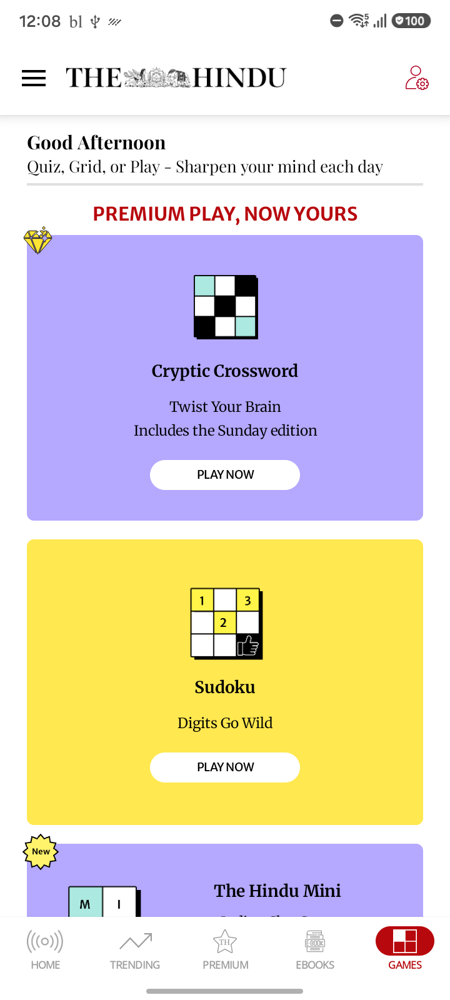
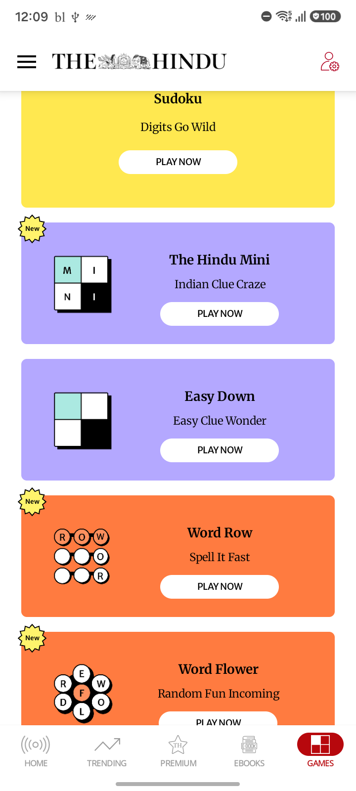
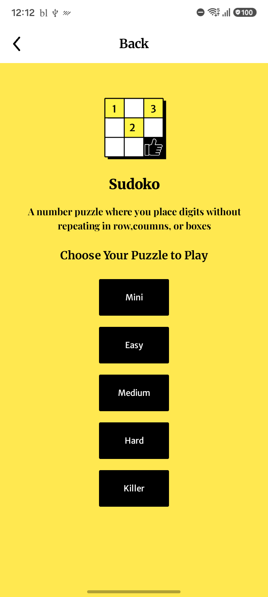
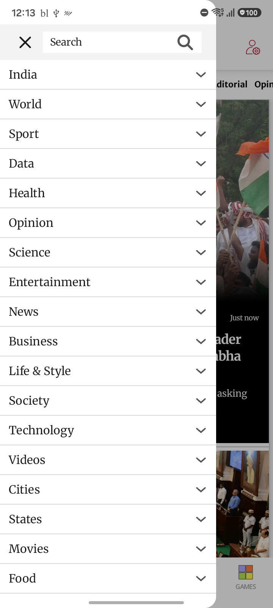

| Scenario ID | Module | Scenario | Status | Duration (sec) | AI Total | AI PASS | AI FAIL |
|---|---|---|---|---|---|---|---|
| COMPLEX_005 | AI Generated | Home to Games and Back Navigation | PASS | 50.95 | 2 | 2 | 0 |
| COMPLEX_004 | AI Generated | Games Landing and Easy Down Listing | PASS | 93.73 | 2 | 1 | 1 |
| COMPLEX_003 | AI Generated | Dark Mode Appearance Validation | FAIL | 70.3 | 1 | 1 | 0 |
| COMPLEX_002 | AI Generated | Subscriber Sudoku Navigation | PASS | 86.61 | 2 | 1 | 1 |
| COMPLEX_001 | AI Generated | Anonymous Home and Hamburger Navigation | PASS | 47.96 | 2 | 2 | 0 |

Image: COMPLEX_005_games_page_from_bottom_navigation.png
Confidence: High Severity: LOW
Reason: All UI elements are fully rendered without any visible defects or missing content.
Image: COMPLEX_005_home_page_back_navigation.png
Confidence: High Severity: LOW
Reason: All expected UI components are present and the layout is rendered completely without defects.
Image: COMPLEX_004_easy_down_destination.png
Confidence: High Severity: HIGH
Reason: Large blank white region indicates incomplete rendering or missing content in the main area of the application.
Issues:
Jira Title: Screen displays blank white area with missing content
Jira Description: A large blank white region is visible on the screen below the toolbar, indicating that main content is missing or failed to render.

Image: COMPLEX_004_scroll_down_and_games_catalogue.png
Confidence: High Severity: LOW
Reason: All expected UI components are present and properly rendered with no evidence of layout, rendering, or text issues.
Image: COMPLEX_003_dark_mode_enabled.png
Confidence: High Severity: LOW
Reason: All expected UI elements for the Appearance settings screen are present and layout is correct. No evidence of rendering issues, missing content, or alignment problems.
Image: COMPLEX_002_games_page_sudoku.png
Confidence: High Severity: LOW
Reason: All expected UI components are present and fully rendered. No obvious UI defects are visible.

Image: COMPLEX_002_sudoku_landing_page.png
Confidence: High Severity: LOW
Reason: There is a text typo in the description ('coumns' instead of 'columns').
Issues:
Jira Title: Typo in Sudoku puzzle description
Jira Description: The description under 'Sudoko' contains a typo: 'row,coumns' should be 'row,columns'.

Image: COMPLEX_001_hamburger_navigation_menu.png
Confidence: High Severity: LOW
Reason: All expected UI elements are present, no visual defects.
Image: COMPLEX_001_home_closing_menu.png
Confidence: High Severity: LOW
Reason: All expected UI components are present and fully rendered. No visible defects identified.